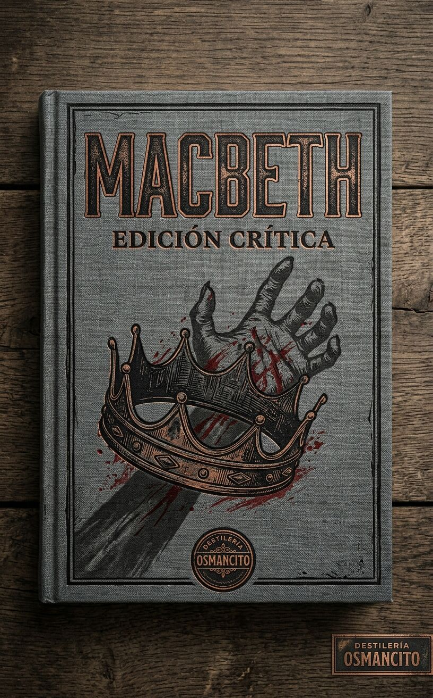
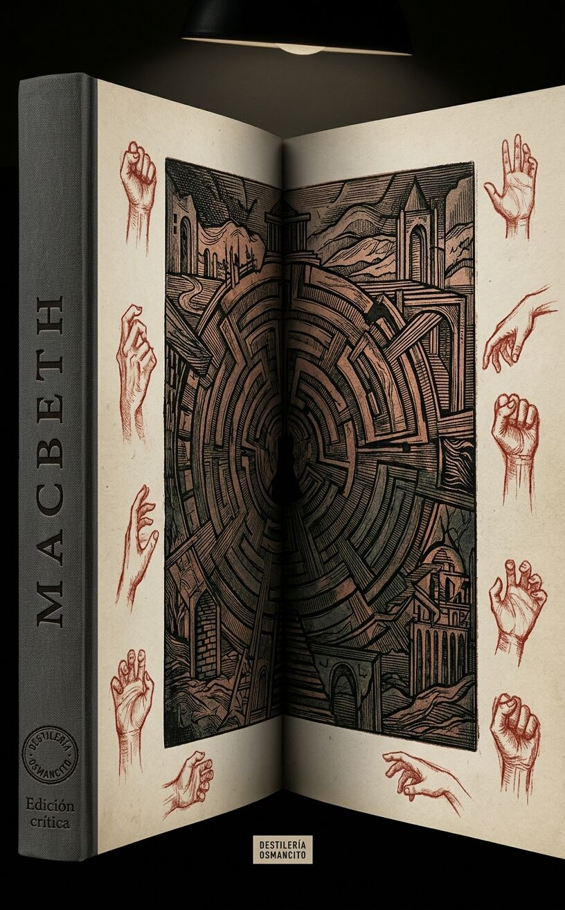
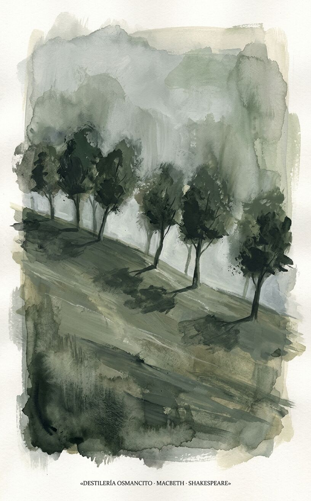

Llega una pieza oscura y breve, con la superficie áspera de una puerta que nadie deja de golpear.
Una predicción no obliga a matar: en esta obra, la posibilidad entra primero en el oído y luego alguien decide ponerle manos. Lo que parecía poder lavarse vuelve como una mancha invisible. ¿Cuándo empieza un crimen: al ejecutarlo, al imaginarlo o al aprender a llamar destino al propio deseo?
Título — Macbeth.
Autor — William Shakespeare.
Año — La fecha de publicación original no consta en el corpus descargado; el archivo de esta edición indica que se creó el 31 de julio de 2015, no que la obra se publicara ese año.
Género — Tragedia teatral, por su forma dramática y su desenlace.
Extensión estimada — 18 333 palabras en el archivo recibido, contando portada editorial, reparto, rótulos y acotaciones; aproximadamente 73 páginas a 250 palabras por página; cinco actos y 28 escenas. El archivo recibido cubre el texto completo de la edición descargada, no un fragmento.
Idioma original — Inglés, el idioma del texto de la obra recibido.
Sinopsis — Macbeth recibe una profecía de realeza y mata al rey Duncan para ocupar el trono. Convertido en rey, ordena atacar a Banquo y a Fleance, pero el hijo escapa y el fantasma del padre irrumpe en el banquete. Tras nuevas profecías, manda matar a la familia de Macduff; Malcolm reúne fuerzas contra él. Lady Macbeth muere, Macduff mata a Macbeth y Malcolm es aclamado rey.
Macbeth — Guerrero escocés y después rey.
Lady Macbeth — Esposa de Macbeth y cómplice en la muerte de Duncan.
Duncan — Rey de Escocia asesinado durante su visita al castillo de Macbeth.
Banquo — Compañero de armas de Macbeth y padre de Fleance.
Fleance — Hijo de Banquo que escapa de los asesinos.
Malcolm — Hijo mayor de Duncan que busca recuperar el trono.
Macduff — Noble escocés que se une a Malcolm y combate a Macbeth.
Las tres brujas — Figuras que pronuncian las profecías ante Macbeth y Banquo.
En el primer acto, las brujas anuncian que Macbeth será señor de Cawdor y luego rey; a Banquo le anuncian una descendencia de reyes. Macbeth recibe casi enseguida el título de Cawdor, y esa coincidencia vuelve imaginable la segunda predicción. Duncan nombra heredero a Malcolm y se hospeda en el castillo de Macbeth. Macbeth sabe que matar a su huésped sería traicionar a su rey y a su deber de anfitrión; Lady Macbeth lo convence y prepara a los guardias para cargarles la culpa.
Macbeth mata a Duncan fuera de escena. Lady Macbeth devuelve los puñales que él no se atreve a dejar, y ambos reciben los golpes que llaman a los visitantes. Macbeth mata a los guardias antes de que puedan responder; Malcolm y Donalbain huyen por separado y quedan bajo sospecha. Macbeth es coronado. Pero el anuncio hecho a Banquo vuelve insegura su corona: Macbeth manda asesinarlo junto con Fleance. Banquo muere, Fleance escapa y el fantasma de Banquo ocupa una silla en el banquete; el rey se delata ante invitados que no ven lo que él ve.
Macbeth busca otra vez a las brujas. Las apariciones le advierten que tema a Macduff, pero prometen que ningún nacido de mujer podrá herirlo y que no caerá hasta que el bosque de Birnam avance sobre Dunsinane. Su confianza en esas fórmulas convive con una nueva orden: matar a la esposa y a los hijos de Macduff, que ha huido a Inglaterra. Allí Malcolm prueba la lealtad de Macduff fingiendo ser indigno de reinar; Ross llega con la noticia de la matanza. La alianza marcha contra Macbeth. Lady Macbeth camina dormida y frota unas manos que juzga manchadas. Después se anuncia su muerte; Malcolm hace que los soldados lleven ramas de Birnam para ocultar su número, y Macduff revela que fue extraído antes de tiempo del vientre materno. Mata a Macbeth; Malcolm recibe la corona. El texto atribuye el suicidio de Lady Macbeth solo a lo que «se cree» en el discurso final de Malcolm: no muestra su muerte en escena ni confirma ese modo de morir.
Un hombre recibe una promesa y la convierte en sentencia contra sí mismo: cada cosa que gana —el título, la corona, la seguridad comprada con más sangre— le cierra otra puerta, hasta que tenerlo todo y no tener nada son la misma habitación. La obra entera pasa de noche y a tientas, y en ella casi nadie duerme: los que matan no pueden, los que mueren ya no hace falta. Cuando por fin amanece, un bosque está caminando y la palabra tomada al pie de la letra resulta ser la trampa.
Tres brujas acuerdan, en medio del trueno y el relámpago, volver a encontrarse cuando termine el tumulto de la batalla, antes del ocaso, en un brezal. Tienen ya un nombre entre manos: Macbeth. Se van dejando enunciada la ley del mundo que empieza —lo bello es turbio y lo turbio es bello— y el aire queda espeso, de un frío de presagio.
En el campamento, el rey Duncan recibe a un capitán sangrante que cuenta la batalla doble: primero el rebelde Macdonwald, reforzado desde las islas del Oeste, a quien Macbeth se abrió paso a tajos hasta partirlo de la nuez a las mandíbulas y clavar su cabeza en las almenas; después, cuando la victoria parecía hecha, el asalto fresco del rey de Noruega, que Macbeth y Banquo rechazaron redoblando golpes como cañones cargados dos veces. Ross añade desde Fife el detalle que importa: Noruega contó con la ayuda del traidor thane de Cawdor, y aun así la victoria fue escocesa; Sweno paga diez mil monedas por enterrar a sus muertos. Duncan ordena la muerte inmediata de Cawdor y manda saludar a Macbeth con el título del traidor: lo que uno perdió, el otro lo ganó. La primera promesa ya está cumplida antes de ser prometida, y la escena queda a hierro recién forjado.
En el brezal, las brujas cuentan sus pequeñas venganzas —a un marinero le negarán el sueño y le harán tempestad aunque no puedan hundirle el barco: poder de tormento, no de destrucción— y al oír el tambor cierran el círculo. Entran Macbeth y Banquo; el primer verso de Macbeth en la obra es una versión del estribillo de ellas: jamás vio un día tan turbio y tan bello. Las brujas lo saludan tres veces: thane de Glamis, thane de Cawdor, y rey en adelante. Macbeth se estremece; Banquo, que no mendiga ni teme sus favores, pide su parte y recibe acertijos: menor que Macbeth y mayor, no tan feliz y mucho más feliz, padre de reyes sin ser rey. Cuando Macbeth exige más, se deshacen en el aire. Llegan Ross y Angus con la investidura: Macbeth es ya thane de Cawdor. Banquo ve la mecánica entera —los instrumentos de las tinieblas dicen verdades, nos ganan con bagatelas honestas, para traicionarnos en lo más hondo— y Macbeth, en aparte, siente la otra cosa: dos verdades como prólogos del acto imperial, y ya una imagen horrenda de asesinato que le golpea el corazón contra las costillas; los temores presentes son menos que las imaginaciones horribles. Se da una salida: si el azar quiere coronarlo, que el azar lo corone sin que él se mueva. La escena termina en esa tregua que ya es mentira, con una temperatura eléctrica que no descarga.
Duncan pregunta si Cawdor ya fue ejecutado: Malcolm cuenta que confesó, pidió perdón y murió mejor de lo que vivió —nada en su vida le sentó como el dejarla. Duncan sentencia que no hay arte para leer la construcción del ánimo en la cara: era un hombre en quien depositó una confianza absoluta; lo dice en el momento exacto en que entra Macbeth. El rey colma de gratitud a sus dos capitanes y luego hace el movimiento que lo cambia todo: nombra a su hijo mayor Malcolm Príncipe de Cumberland, heredero, y anuncia que irá a dormir a Inverness. En aparte, Macbeth mide el obstáculo: un escalón ante el que hay que caerse o saltar por encima; pide a las estrellas que escondan sus fuegos y que el ojo no vea lo que la mano haga. La corte se mueve hacia Inverness con alegría de ceremonia, y debajo corre ya una chispa fría.
En Inverness, Lady Macbeth lee la carta de su marido: el encuentro con las brujas, el saludo de Cawdor cumplido al instante, el «rey que serás». Ella no duda de la ambición de él; duda de su materia: es demasiado lleno de la leche de la bondad humana para tomar el camino más corto; quiere lo alto pero lo quiere santamente, no jugaría falso y sin embargo querría ganar torcidamente. Decide que ella le verterá sus espíritus en el oído. Un mensajero anuncia que el rey llega esta noche, y ella invoca a los espíritus que asisten los pensamientos mortales: que la desexen aquí mismo, la llenen de la crueldad más directa, espesen su sangre, tapen el paso al remordimiento, tomen su leche por hiel; que venga la noche espesa para que el cuchillo no vea la herida que abre ni el cielo grite «detente». Cuando Macbeth entra, el intercambio dura cuatro líneas: Duncan viene esta noche; ¿y cuándo se va?; mañana, según su propósito; oh, nunca verá el sol ese mañana. Ella toma el mando completo: la cara de él es un libro donde se leen cosas extrañas; hay que parecer la flor inocente y ser la serpiente debajo; que deje todo lo demás en sus manos. El giro está en la velocidad: ella decide en un solo aliento lo que él no se ha atrevido ni a decirse, y la escena arde con una llama fría y exacta.
Duncan llega al castillo y lo encuentra de asiento agradable: el aire se recomienda dulcemente, y Banquo celebra los nidos del ave veraniega en cada saliente. Es la única escena serena de la obra y es la boca de la trampa; la anfitriona duplica cada cortesía —todo servicio hecho dos veces y luego doblado— con el significado contrario en la lengua. Duncan toma la mano de su anfitriona y pide que lo conduzca a su anfitrión, a quien quiere mucho. Tibieza falsa, estival, insoportable.
A solas durante el banquete, Macbeth hace la cuenta que ningún cómplice le ha pedido: si el golpe pudiera cerrar sus consecuencias con la muerte de Duncan, habría que darlo rápido y saltarse la vida venidera; pero la justicia equánime enseña que las instrucciones sangrientas vuelven a envenenar al inventor, y Duncan está aquí en doble confianza —pariente y rey a la vez, y además huésped: al anfitrión le toca cerrar la puerta contra el asesino, no blandir el cuchillo. Duncan además ha gobernado tan manso y tan limpio que sus virtudes clamarán como ángeles, y la piedad, como un recién nacido desnudo a lomos del viento, soplará el hecho horrendo en todos los ojos. No tiene espuela: solo la ambición que salta sobre sí misma y cae del otro lado. Le dice a su mujer que no seguirán adelante: acaba de comprar opiniones de oro y quiere llevarlas nuevas. Ella lo desarma sin tocar el argumento, tocando la herida: ¿la esperanza estaba borracha?, ¿eres cobarde en acto y valor lo que eres en deseo?, ¿vivirás cobarde a tus propios ojos, como el gato del refrán que quiere peces y no quiere mojarse? Cuando él responde que se atreve a todo lo que le cuadra a un hombre, ella sube la apuesta: yo he dado de mamar y sé lo tierno que es amar al bebé que me muerde; le habría arrancado el pezón de las encías y estrellado los sesos si hubiera jurado como tú juraste. Él pregunta qué pasa si fallamos; ella responde que no fallaremos y entrega el plan completo: emborrachar a los dos camareros, el sueño como muerte, los puñales de ellos, la sangre untada sobre ellos, el llanto y el clamor ensayados. Él cede con una admiración que ya es rendición: que engendre solo hijos varones, porque su temple no compone otra cosa; ya está resuelto y tensa cada agente corporal hacia la hazaña terrible; la cara falsa debe ocultar lo que el corazón falso sabe. El giro: quien entró dudando sale decidido, y no lo movió una razón sino la palabra «hombre» usada como cuchillo. La temperatura sube a blanco y se fija en hierro.
Pasada la medianoche, Banquo pasea con su hijo Fleance: la luna se ha puesto, en el cielo hay economía, todas las velas están apagadas. Él mismo confiesa una resistencia cansada —una citación pesada le cae encima como plomo y sin embargo no quiere dormir, para que en el reposo no lo alcancen los pensamientos malditos que la naturaleza suelta. Aparece Macbeth con un sirviente. Banquo le entrega un diamante que el rey manda a la anfitriona y menciona que soñó con las tres hermanas: a Macbeth le han mostrado algo de verdad. Macbeth responde que no piensa en ellas, y enseguida propone una conversación sobre ese asunto, con una oferta envuelta en cortesía: si Banquo se ciñe a su consentimiento cuando llegue el momento, le hará honor. Banquo acepta con la cláusula exacta: mientras no pierda el que tiene y mantenga el pecho franqueado y la lealtad limpia. Se van; Macbeth manda que la señora toque la campana cuando esté la bebida, y queda solo con la visión: un puñal frente a él, el mango hacia su mano, que no puede empuñar y no puede dejar de ver, ahora con costras de sangre en la hoja que antes no tenía. No decide si sus ojos son los tontos de los otros sentidos o los únicos que valen; decide que no hay tal cosa, que es el negocio sangriento el que así informa a sus ojos — y aun así se deja guiar: la visión lo mariscala por el camino que ya llevaba, con el instrumento que iba a usar. La campana suena: voy, y está hecho; no lo oigas, Duncan, que es campanada que te cita al cielo o al infierno. La temperatura es de frío alucinado, de escarcha en la piel.
Lady Macbeth espera: lo que emborrachó a los camareros la ha hecho audaz a ella. Oye el chillido del búho, el campanero fatal. Teme un instante que se hayan despertado y que el intento sin el hecho los confunda — ella había dejado listos los puñales; no pudo fallarlos — y suelta el dato que quedará colgando de la obra: si Duncan dormido no se hubiera parecido a su padre, lo habría hecho ella misma. Macbeth entra con los puñales ensangrentados: el hecho está hecho. Lo que sigue no es triunfo sino ruido: uno rió en sueños, otro gritó «asesinato», se despertaron mutuamente, rezaron y volvieron a dormirse; uno dijo «Dios nos bendiga» y el otro «amén», y él, que más necesitaba la bendición, no pudo decir «amén»: se le atascó en la garganta. Luego la voz: «No dormirás más; Macbeth asesina el sueño», el sueño inocente que anuda la manga deshecha del cuidado; Glamis asesinó el sueño, por tanto Cawdor no dormirá, Macbeth no dormirá. Ella lo trata de enfermo del seso y le ordena lavarse esa testificación sucia de las manos y devolver los puñales al cuarto para untar a los camareros; él no puede volver: le da miedo pensar lo que hizo, no se atreve a mirarlo otra vez. Ella va ella misma —los durmientes y los muertos son como pinturas; miedo de ojo de niño— y mientras tanto empiezan a llamar a la puerta. Macbeth mira sus manos: ¿las lavará todo el gran océano de Neptuno? No; esta mano más bien encarnadinará los mares multitudinarios, hará rojo el verde entero. Ella vuelve con las manos del mismo color y la frase que la obra se encargará de desmentir: un poco de agua nos limpia de este hecho; qué fácil es. Él cierra la escena con el deseo imposible: despierta a Duncan con tu aldabonazo; ojalá pudieras. Todo es calor febril, pegajoso, rojo.
El aldabonazo continúa y le toca al Portero abrir: la comedia de la puerta del infierno —un labrador ahorcado por la expectativa de la abundancia, un equivocador que juraba en ambos platillos y no pudo equivocar su camino al cielo— y la lección seria dentro del chiste: la bebida es equivocadora con la lujuria, provoca el deseo y quita la ejecución. Provocar y desproveer: el motor entero de la obra está dicho en la taberna del portero. Entran Macduff y Lennox; Macduff debe despertar al rey, y mientras Macbeth lo guía, Lennox cuenta la noche desatada: chimeneas derribadas, lamentos y gritos extraños de muerte, la tierra febril que se sacudió. Macduff vuelve con el horror: el asesinato más sacrílego ha abierto el templo ungido del Señor y le ha robado la vida. Suena la alarma. Macbeth declara que haber muerto una hora antes habría sido vivir un tiempo bendito: el vino de la vida está extraído y solo quedan las heces. Lennox informa que los camareros aparecieron insignados de sangre, con los puñales sin limpiar sobre sus almohadas, y Macbeth añade el movimiento que no estaba en el plan: se arrepiente de su furia, porque los mató. Macduff pregunta la única cosa: ¿por qué lo hiciste? La respuesta de Macbeth es una defensa demasiado larga y demasiado pintada, y en medio de ella Lady Macbeth se desploma: ¡auxilio! Nadie sabrá si el desmayo es táctica o grieta, pero funciona: la sala entera se ordena alrededor de ella. Los hijos de Duncan hablan en aparte: hay dagas en las sonrisas de los hombres; cuanto más cerca la sangre, más cerca la sangre derramada. Se reparten el exilio: Malcolm a Inglaterra, Donalbain a Irlanda; la flecha asesina aún no ha caído y lo seguro es apartarse de la puntería. La escena es estruendo, latón, pánico contenido.
Afuera, al día, un Viejo y Ross cotejan los prodigios: de día es de noche; un halcón, en su orgullo de altura, fue muerto por un mochuelo ratonero; los caballos de Duncan se volvieron salvajes, rompieron las cuadras y —dice Ross, que lo vio— se comieron unos a otros. La naturaleza imita el crimen: lo pequeño devora lo grande, el orden se come a sí mismo. Llega Macduff con las noticias administrativas: los camareros lo hicieron, sobornados; los hijos huyeron y la huida les echa la sospecha encima; Macbeth ya fue nombrado y partió a Scone a investirse; el cuerpo de Duncan va a Colmekill. Ross irá a la coronación; Macduff, no: vuelve a Fife. Es la primera negativa silenciosa de la obra, y se despide con el deseo filoso: no vaya a ser que nuestras túnicas viejas nos sienten mejor que las nuevas. Temperatura gris, de frío ominoso a pleno día.
Banquo, a solas, hace la cuenta del enemigo y de su propia esperanza: ya lo tienes todo —rey, Cawdor, Glamis— tal como prometieron las mujeres raras, y temo que lo jugaste muy sucio; pero también se dijo que yo sería raíz y padre de reyes; si en ti se cumplieron, ¿por qué no serían también mis oráculos? Se calla. Entra la corte: Macbeth es rey y hay cena solemne esta noche, y su interrogatorio es una medición tomada con modales —¿cabalgas esta tarde?, ¿lejos?, no falles a la fiesta, ¿va Fleance contigo?—: cada cortesía fija un dato de la emboscada. Solo, confiesa que ser así no es nada sin estar seguro de serlo: le colocaron una corona sin fruto y un cetro estéril, y por la descendencia de Banquo manchó su alma y asesinó al amable Duncan. Recibe a dos asesinos y los persuade con el método que su mujer usó con él: Banquo, y no el inocente Macbeth, los tuvo siempre bajo la fortuna; «somos hombres», responden, y él los ordena en el catálogo —a los perros se les dice perros a todos, pero el registro distingue al galgo del chucho: digan si tienen un puesto que no sea el último. Queda cerrado: esta noche, lejos del palacio, Banquo y Fleance; si el vuelo del alma de Banquo ha de encontrar el cielo, lo encontrará esta noche. El giro es contable: la corona resulta sin valor sin el futuro, y el segundo asesinato ya no necesita ni esposa ni duda. Temperatura fría, de escritorio.
Lady Macbeth, que empieza a quedar fuera, resume el balance antes que nadie: nada se ha tenido, todo se ha gastado, cuando el deseo se obtiene sin contento; es más seguro ser aquello que destruimos. Macbeth llega con la misma aritmética en otra lengua: chamuscamos la serpiente, no la matamos; mejor estar con los muertos, a quienes mandamos a la paz buscando la nuestra; Duncan duerme bien después de la fiebre intermitente de la vida. Ella le pide que alise el ceño y brille entre los invitados, y ambos se ensayan la máscara —lavar los honores en arroyos de halago, hacer de las caras visores de los corazones. Luego él confiesa el estado real: mi mente está llena de escorpiones; Banquo y Fleance viven. Ella responde que en ellos la copia de la naturaleza no es eterna. Y él hace el movimiento que invierte 1.5: sé inocente del conocimiento, queridísima, hasta que aplaudas el hecho. La noche es convocada como cómplice —ven, noche, y con tu mano sangrienta e invisible cancela ese gran pacto que me deja pálido. Las cosas mal comenzadas se fortalecen con el mal. El mando de la empresa ha cambiado de manos sin una palabra sobre el cambio: temperatura de terciopelo negro con fiebre debajo.
En el camino al palacio hay tres asesinos: Macbeth ha enviado a un tercero, que conoce los encargos con la dirección justa; la obra no dirá quién es. Banquo y Fleance llegan a pie con una antorcha; «lloverá esta noche», dice Banquo, y le caen encima. Muere gritando la orden que salva la profecía: ¡traición! ¡Huye, buen Fleance, huye, huye, huye! Alguien apaga la luz; hay uno solo caído; el hijo ha escapado. Han perdido la mejor mitad del asunto. El giro es de mecánica pura: el plan era perfecto y la oscuridad, que sirvió para todo lo demás, aquí sirvió al fugitivo. La escena es un apagón súbito.
El banquete real empieza con protocolo y se interrumpe en la puerta: el primer asesino, con sangre en la cara. Es de Banquo: degollado en una zanja, veinte heridas en la cabeza; pero Fleance escapó. Macbeth siente volver el acceso: habría sido perfecto, entero como el mármol, amplio como el aire que todo lo envuelve; ahora está enjaulado, confinado, atado a dudas insolentes. Vuelve a la mesa, brinda por el amigo ausente —ojalá estuviera aquí— y el fantasma de Banquo se sienta en su lugar. La mesa está llena, dice; ¿cuál de ustedes ha hecho esto?; no puedes decir que fui yo. Lady Macbeth administra la crisis con la mentira ya usada —un acceso que tiene desde joven— y en aparte repite el arma de siempre: ¿eres un hombre? Esto es la pintura de tu miedo, el puñal dibujado en el aire; miras un taburete. El fantasma sale; Macbeth se recompone, brinda de nuevo por Banquo, y el fantasma vuelve. Esta vez lo reta: toma cualquier forma —oso ruso, rinoceronte armado, tigre de Hircania— menos esa; vuelve a la vida y cítame en el desierto; si entonces tiemblo, proclámame muñeca de una niña. La fiesta está rota: los lores se van sin orden, y Ross pregunta en voz alta qué vistas son esas. Solos, los reyes hacen inventario: la sangre tendrá sangre; Macduff se niega a comparecer; en casa de cada noble hay un sirviente pagado por la corona; mañana mismo irá a las hermanas raras, resuelto a saber por los peores medios lo peor. Estoy tan metido en sangre que volver sería tan tedioso como seguir. Cosas extrañas tengo en la cabeza que pasarán a la mano, que deben actuarse antes de ser examinadas. Ella le receta sueño; él cierra: mi extraño autoengaño es el miedo del iniciado; aún somos jóvenes en el hecho. Temperatura de calor histérico bajo hielo, que se apaga en gris.
Las brujas reciben la visita de Hécate, su maestra, que las reprende por haber traficado con Macbeth sin llamarla —y todo por un hijo caprichoso que ama para sus propios fines, no por ellas. Ordena la cita de mañana en el foso de Aqueronte: él vendrá a conocer su destino, y ella destilará una gota de la esquina de la luna para levantar espíritus artificiales que, por la fuerza de su ilusión, lo arrastren a su confusión: despreciará el hado, desdeñará la muerte y llevará sus esperanzas por encima de la sabiduría, la gracia y el miedo. Porque la seguridad es la enemiga principal de los mortales. La trampa de 4.1 queda anunciada por su autora, con una frialdad administrativa, de oficina del infierno.
Lennox y un Lord conversan en una sola ironía sostenida: el amable Duncan fue muy compadecido por Macbeth —eso sí, estaba muerto; el valiente Banquo caminó demasiado tarde —pueden decir que lo mató Fleance, porque Fleance huyó; los hombres no deben caminar tan tarde. Los nobles ya leen todo al revés, con el lenguaje exacto de la versión oficial. El Lord aporta la geografía de la contra: Malcolm vive en la corte inglesa con el piadoso Eduardo; Macduff ha ido a pedir que despierte a Northumberland y al belicoso Siward, para devolver a Escocia el sueño a sus noches y los banquetes sin cuchillos; al mensajero de la corona, Macduff respondió con un «Señor, yo no» absoluto. Ambos despiden plegarias: que pronto vuelva una bendición a este país bajo una mano maldita. Temperatura baja, amarga, de conspiración.
En la cueva hierve el caldero —el gato ha maullado tres veces; entran al potaje el sapo de treinta y un días de veneno, el ojo de tritón, la raíz de beleño cavada en la oscuridad, el dedo de bebé estrangulado al nacer, y todo se enfría con sangre de babuino: doble, doble, trabajo y problema. Es el pasaje más ornamental del corpus, y aun él trabaja: cada ingrediente es una crueldad embotellada. Hécate pasa, felicita y sale. Una bruja siente el pinchazo en los pulgares: algo malvado viene por aquí. Entra Macbeth, y ya no viene a recibir sino a exigir: que respondan aunque desaten los vientos contra las iglesias. Ofrecen mostrarle a sus maestros. La primera aparición, una cabeza armada: cuidado con Macduff, cuidado con el thane de Fife; basta. La segunda, un niño sangriento: sé sangriento, audaz y resuelto, porque ninguno nacido de mujer dañará a Macbeth. La tercera, un niño coronado con un árbol en la mano: jamás será vencido hasta que el gran bosque de Birnam venga a la alta colina de Dunsinane. Macbeth hace de inmediato la lectura buscada —eso jamás será; vivirá el arriendo de la naturaleza— y en la misma respiración decide matar a Macduff de todos modos, para hacer la seguridad doblemente segura: la primera profecía le da miedo, la segunda le da sueño, y él compra las dos con sangre. Queda la pregunta que le quema: ¿reinará la descendencia de Banquo? Le dicen que no busque más; insiste, y el espectáculo responde: ocho reyes, el último con un espejo que multiplica la línea, y detrás Banquo, enchicharrado de sangre, sonríe y señala: son suyos. Es el único golpe que no puede anudar a ninguna acción. Lennox le confirma la fuga de Macduff a Inglaterra, y Macbeth se dicta la ley nueva: desde este momento los primeros impulsos del corazón serán los primeros de la mano; sorprenderá el castillo de Macduff y pasará a filo de espada a su mujer, sus críos y todas las almas de su línea, antes de que este propósito se enfríe. La temperatura pasa de lo sulfuroso a una decisión ártica.
En Fife, Lady Macduff pregunta qué habrá hecho su marido para huir: dejar mujer, hijos, casa y títulos en el lugar del que se huye no es amor ni sabiduría; hasta el reyezuelo, el pájaro más diminuto, pelea contra el búho por sus pollos. Ross apenas sostiene la conversación —crueles son los tiempos en que somos traidores y no lo sabemos, cuando creemos el rumor de lo que tememos sin saber qué tememos— y se va antes de quebrarse. Madre e hijo juegan entonces a definir al traidor —uno que jura y miente— y el niño concluye que los que juran y mienten son tontos, porque hay suficientes para vencer a los honestos y colgarlos a ellos: la lógica del niño es la historia de Escocia. Un mensajero irrumpe: peligro cercano, váyanse; no hay adónde —ella recuerda que está en este mundo terrenal, donde hacer daño es a menudo loable y hacer el bien, una necedad peligrosa. Entran los asesinos; el niño defiende a su padre («mientes, villano orejipeludo») y lo apuñalan ahí mismo: me ha matado, madre; corre, te lo ruego. Ella sale gritando ¡asesinato!, perseguida. El giro es de selección: la obra mata en escena al inocente y mantuvo fuera de escena al rey. Temperatura de calor doméstico arrancado, escaldante.
En Inglaterra se desarrolla la escena más larga del corpus, y su longitud es su argumento. Malcolm propone llorar en alguna sombra desolada; Macduff prefiere empuñar la espada mortal y ponerse a horcajadas sobre la patria caída: cada mañana nuevas viudas aúllan, nuevos huérfanos lloran. Malcolm no se entrega: este tirano, cuyo solo nombre ampolla las lenguas, fue tenido por honesto; tú lo quisiste bien; aún no te ha tocado; yo soy joven, y quizá puedas merecer algo de él a través de mí. Macduff responde que no es traidor, y Malcolm empieza la prueba: se acusa a sí mismo de todos los vicios que un rey no puede tener —lujuria sin fondo, avaricia insaciable que despojaría a los nobles de sus tierras, ninguna de las gracias que hacen al rey: justicia, verdad, templanza, estabilidad, largueza, perseverancia, misericordia, humildad, devoción, paciencia, coraje, fortaleza; con tal poder, vertería la dulce leche de la concordia en el infierno. Macduff le concede una a una las salidas —Escocia tiene abundancias para tu voluntad, hay damas dispuestas— hasta que ya no hay salida: ¿apto para gobernar? No, ni para vivir. ¡Oh nación miserable!, ¿cuándo verás tus días saludables, si el heredero verdadero se maldice a sí mismo? Tu padre fue un rey santísimo; tu madre moría cada día que vivía, de rodillas más que de pie. Adiós; aquí acaba mi esperanza. Ahí Malcolm cierra la trampa al revés: esa noble pasión, hija de la integridad, ha limpiado de mi alma los negros escrúpulos; el diablo Macbeth me ha buscado con muchas de estas argucias; desdigo mi propia detracción, abjuro de las manchas que me eché encima; mi primera falsedad fue esta, contra mí mismo. Y entrega la noticia militar: el viejo Siward, con diez mil hombres de guerra, ya se ponía en marcha antes de tu llegada. Pasa un doctor y se abre el contracuadro: el rey Eduardo de Inglaterra cura con el tacto —a los enfermos del «mal», hinchados y ulcerosos, les cuelga una moneda de oro con oraciones santas y sanan; tiene don de profecía y bendiciones colgadas del trono. El rey que sana tocando, contra el rey que mata mandando: el corpus instala la medida exacta de lo que Macbeth no es. Llega Ross, y su crónica de Escocia es un país que ya no es madre sino tumba, donde solo sonríe el que nada sabe, donde los hombres buenos mueren antes que las flores de sus sombreros. Macduff pregunta por los suyos y Ross miente primero con piedad —bien, todos bien— antes de soltar lo que traía: tu castillo fue sorprendido; tu mujer y tus críos, salvajemente degollados. Macduff se cubre el rostro con el sombrero y Malcolm le pide que dé palabras al dolor: el que no habla susurra al corazón sobrecargado y le ordena romperse. Lo que sigue es la meditación más desnuda del corpus sobre el luto: ¿todos?, ¿mis lindos polluelos y su gallina de un solo golpe de garra?; Malcolm le pide que lo dispute como un hombre; Macduff responde que también debe sentirlo como un hombre —él no tiene hijos— y se acusa: fueron todos golpeados por mí; no por sus deméritos, sino por los míos, cayó la matanza sobre sus almas. Malcolm convierte el duelo en piedra de afilar; Macduff pide una sola cosa al cielo: corta toda intermisión, pon frente a frente a este demonio de Escocia y a mí, al alcance de mi espada. La noche es larga, cierra Malcolm, la que nunca encuentra el día. El giro de la escena es que la trampa diseñada para cazar a un traidor captura lo contrario: el único hombre cuya lealtad pertenece al país y no a un cargo. Temperatura lenta y pesada, que termina en hierro forjado.
Un doctor y una dama de compañía velan de noche en Dunsinane: él lleva dos noches sin ver nada de lo que ella reporta; ella cuenta que desde que el rey salió al campo, Lady Macbeth se levanta, se echa el camisón, abre su escritorio, saca papel, escribe, lee, sella y vuelve a la cama, todo en el sueño más cerrado. Lo que dice mientras tanto, la dama no lo repetirá a nadie sin testigo. Entra la reina con una vela —tiene luz junto a sí continuamente, es su orden—, los ojos abiertos y el sentido de ellos cerrado. Se frota las manos: es su acción acostumbrada, como lavárselas; la dama la ha visto seguir así un cuarto de hora. Y entonces habla, y todo lo que dijo despierta y en orden vuelve dormida y en fragmentos: aquí hay una mancha; fuera, maldita mancha; una, dos: entonces es hora de hacerlo; el infierno es tenebroso; fie, mi señor, ¿un soldado y con miedo?; ¿qué tenemos que temer, quién puede llamar a cuentas a nuestro poder?; y sin embargo, ¿quién habría pensado que el viejo tuviera tanta sangre? Salta entonces al crimen que nunca supo con ella presente: el thane de Fife tenía mujer; ¿dónde está ahora?; ¿estas manos no estarán limpias nunca? El doctor entiende y se estremece: ha dicho lo que no debía; el cielo sabe lo que ella ha sabido. Ella huele la sangre todavía: todos los perfumes de Arabia no endulzarán esta manita. Luego se despide de su marido imaginario —lávate las manos, ponte el camisón, no tan pálido; Banquo está enterrado, no puede salir de su tumba— y regresa a la cama repitiendo la lección que ya no le sirve: llaman a la puerta; lo hecho, hecho está; a la cama, a la cama, a la cama. El doctor dictamina: esta enfermedad está más allá de mi oficio; las mentes infectadas descargan sus secretos ante sus sordas almohadas; más necesita del divino que del médico; quítenle los medios de toda molestia y no le quiten los ojos de encima. Y se lleva el miedo: pienso, pero no me atrevo a hablar. El giro es la inversión exacta de 2.2: la mujer que prometió que un poco de agua nos limpia no puede dejar de lavarse. Temperatura de vela, clínica, helada.
Los thanes escoceses marchan a encontrarse con los ingleses cerca de Birnam: los guían Malcolm, su tío Siward y Macduff. De Donalbain se confirma que no va con su hermano —y el corpus no volverá a nombrarlo. De Macbeth se dice lo que ya es público: fortifica Dunsinane; unos lo dicen loco, otros furia valiente; siente sus asesinatos pegados a las manos; los que manda se mueven solo por mandato, nada por amor; y el título le cuelga como la túnica de un gigante sobre un ladrón enano. Marchan a verter con el médico del reino enfermo la purga del país. Temperatura de viento que se junta.
En Dunsinane, Macbeth rechaza los reportes: hasta que el bosque de Birnam se mueva a Dunsinane no puede contaminarse de miedo; ¿qué es el niño Malcolm?, ¿no nació de mujer? Los espíritus que conocen todas las consecuencias mortales lo han pronunciado. Que huyan los thanes falsos y se mezclen con los epicúreos ingleses. Pero un sirviente pálido le arruina la arenga —¡diez mil!— y Macbeth lo cubre de insultos (cara de nata, hígado de lirio) antes de que el discurso se le rompa por dentro: estoy enfermo del corazón; he vivido bastante; mi camino de vida ha caído en lo seco, la hoja amarilla; y lo que debería acompañar a la vejez —honor, amor, obediencia, tropas de amigos— no debo esperarlo, sino en su lugar maldiciones no gritadas sino hondas, honor de boca, aliento que el pobre corazón quisiera negar y no se atreve. Pide la armadura aunque no hace falta aún, y en medio del arnés le hace al doctor la pregunta que es su propia confesión: ¿no puedes atender a una mente enferma, arrancar de la memoria un dolor enraizado, borrar los problemas escritos del cerebro y con algún dulce antídoto de olvido limpiar el pecho cargado de esa materia peligrosa que pesa sobre el corazón? El doctor responde la verdad del corpus: en eso, el paciente debe atenderse a sí mismo. Macbeth: tirad la física a los perros. Pregunta todavía por una purga que escurra a los ingleses fuera de su tierra, y se va repitiendo su cláusula: no temeré la muerte y la perdición hasta que el bosque de Birnam venga a Dunsinane. El doctor, en aparte, cierra: si estuviera lejos de Dunsinane y a salvo, ninguna ganancia me traería de vuelta. El giro: invulnerable por contrato, descubre que el contrato no cubre la única enfermedad real. Temperatura seca, otoñal, de brasa.
Junto a Birnam, Malcolm dicta la orden que es a la vez táctica y oráculo: que cada soldado tale una rama y la lleve delante para sombrear las cuentas del ejército. El mecanismo de la profecía resulta ser una maniobra de camuflaje decidida por un hombre sin saber de brujas. Siward cierra: las especulaciones cuentan esperanzas inseguras; el resultado lo arbitrarán los golpes. Temperatura verde, paciente.
Sobre los muros de Dunsinane, Macbeth manda colgar los estandartes: la fuerza del castillo se reirá del sitio; que se pudran aquí fuera de hambre y de fiebre. Un grito de mujeres dentro. Él registra el cambio en sí mismo: casi he olvidado el gusto de los miedos; hubo tiempo en que un chillido nocturno me enfriaba los sentidos; he cenado hartura de horrores; lo tremendo, familiar ya de mis pensamientos matadores, no puede sobresaltarme. Seyton: la reina ha muerto. Y Macbeth responde con la oración fúnebre más extraña del corpus, que no llora a la muerta sino al tiempo: debió morir más adelante; habría habido un momento para esa palabra; mañana y mañana y mañana avanza con este paso mezquino de día en día hasta la última sílaba del tiempo registrado, y todos nuestros ayeres han alumbrado a los necios el camino a la muerte polvorienta; apaga, apaga, vela breve; la vida no es más que una sombra que camina, un pobre actor que se pavonea y se agita su hora sobre el escenario y luego no se oye más; es un cuento contado por un idiota, lleno de ruido y de furia, que no significa nada. El hombre que asesinó por el futuro declara vacío el tiempo mismo. Entra un mensajero con la noticia que no sabe decir: desde mi atalaya miré hacia Birnam y me pareció que el bosque empezó a moverse. ¡Mentiroso y esclavo! Pero a tres millas se ve venir: una arboleda ambulante. Macbeth hace en segundos la revisión completa de su contrato: retiro mi resolución y empiezo a dudar de la equivocación del demonio, que miente como la verdad; «no temas hasta que el bosque de Birnam venga a Dunsinane», y un bosque viene hacia Dunsinane. No hay huir ni quedarse; empiezo a cansarme del sol y querría que el estado del mundo se deshiciera. Que suene la alarma: al menos moriremos con el arnés a la espalda. La temperatura es ceniza.
El ejército suelta las pantallas de hojas y se muestra: el tío Siward y su hijo abrirán la primera batalla; Macduff pide todas las trompetas, los heraldos clamorosos de la sangre y la muerte. Latón puro.
Macbeth pelea como el oso atado al poste: no puedo volar; ¿quién es el que no nació de mujer? A ese temería, o a ninguno. El joven Siward se le planta y muere a sus manos, y Macbeth confirma la cláusula con el cadáver: naciste de mujer; sonrío ante las espadas de hombre nacido de mujer. La profecía se cumple a su favor y cada cumplimiento lo deja más solo dentro de ella. Macduff lo busca por el campo sin golpear a los mercenarios: si eres matado sin que el golpe sea mío, los fantasmas de mi mujer y mis hijos me perseguirán todavía. El castillo se rinde suavemente; la gente del tirano pelea en ambos bandos. Rojo desesperado.
Último cuerpo a cuerpo. Macbeth se niega a hacer el papel del romano insensato que muere sobre su propia espada: mientras vea vidas, las cuchilladas sientan mejor sobre ellas. Macduff: vuélvete, perro del infierno. Macbeth ha evitado a este hombre entre todos: mi alma está demasiado cargada con sangre tuya ya. Macduff no tiene palabras: mi voz está en mi espada. Macbeth le advierte que pierde el trabajo: tan fácil cortarás el aire intrenchable como hacerme sangrar; llevo una vida encantada, que no debe rendirse a nadie nacido de mujer. Macduff: desespera de tu encanto, y que el ángel a quien has servido te diga que Macduff fue de las entrañas de su madre arrancado antes de tiempo. Macbeth recibe el golpe verbal que es el verdadero: maldita sea esa lengua, porque ha acobardado la mejor parte de mi hombría; y no sean creídos más estos demonios juglares, que juegan con nosotros en doble sentido, que guardan la palabra de la promesa al oído y la rompen a la esperanza. No pelearé contigo. Macduff le ofrece la vida como escarnio: ríndete, cobarde, y vive para ser el espectáculo y el blanco de la época; te pintaremos sobre un poste con el rótulo «aquí pueden ver al tirano». Y Macbeth toma la primera decisión de toda la obra con los ojos abiertos: no me rendiré para besar el suelo ante los pies del joven Malcolm y ser cebo de la maldición de la chusma; aunque el bosque de Birnam haya venido a Dunsinane, y tú estés frente a mí sin haber nacido de mujer, probaré hasta el final; ante mi cuerpo arrojo mi escudo guerrero; ataca, Macduff, y maldito el primero que grite «basta». Salen peleando; Macbeth es muerto fuera de escena, como murió Duncan. En el campo se hace la cuenta del costo en un padre: Ross informa a Siward que su hijo pagó la deuda del soldado —apenas fue hombre, confirmó su proeza y como hombre murió—; Siward pregunta si tenía las heridas delante; sí, en el frente; entonces sea soldado de Dios: con tantos hijos como pelos tengo, no les desearía muerte más hermosa. Macduff entra con la cabeza de Macbeth: ¡Salve, rey!, porque eso eres; mira dónde está la cabeza maldita del usurpador; el tiempo es libre. Malcolm cierra el corpus repartiendo el orden nuevo: a sus thanes y parientes los hará condes, los primeros que Escocia haya nombrado; llama a casa a los amigos exiliados que huyeron de las trampas de la tiranía vigilante, y a los crueles ministros de este carnicero muerto y su reina endemoniada —quien, según se piensa, por manos propias y violentas se quitó la vida—; lo demás se hará en medida, tiempo y lugar, y todos están invitados a verlo coronado en Scone. El hierro se enfría en una mañana gris.